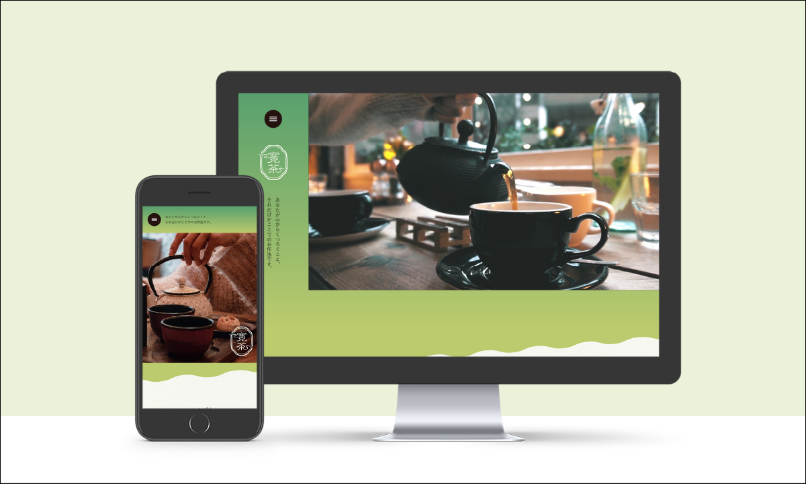
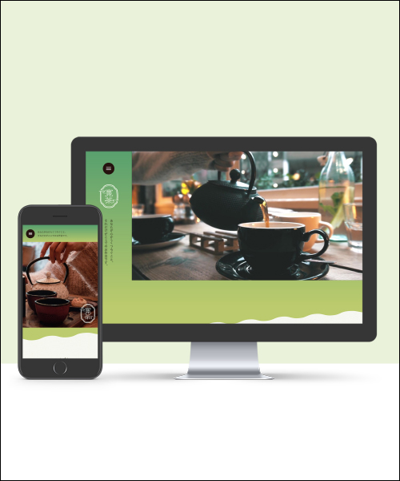

架空の和風カフェ「寛茶」のWebサイト
ターゲット
・20代後半～のお茶やカフェが好きな方
コンセプト
・抹茶をもっと手軽に、日常の一部に
カフェの概要
・抹茶を始めとした日本の伝統的なお茶を、コーヒーや紅茶のように街中でも気軽に味わえるカフェ
・お客様が心から寛げるようにと「寛茶」という名前に
制作のポイント
・PC版のファーストビューに動画を
「美味しそう」「尾心地が良さそう」という印象を持ってもらえるように。
・背景の切り替えに視差効果を使用（Windows版のみ）
背景を次の内容に合わせて切り替えることで心づくりを。
・メニューをカルーセルにして横スクロールで見られるように
縦のスクロール量を減らし、飽きずに見てもらう。また、中央を拡大することで見たい情報を絞って見られるように。